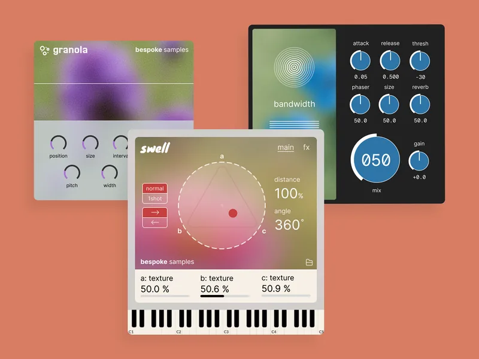

Bespoke Samples
Creating plugins and sample packs for music producers
I designed and developed a suite of plugins and sample packs for experimental electronic music producers.


VSTs are digital audio plugins, small pieces of software that add new sounds or effects to audio production within a digital audio workstation (DAW). My work spanned the entire VST development process from concept to implementation to marketing. User interfaces were designed in Figma, digital signal processing implemented in C++ and Max RNBO, and final plugins developed in HISE.
Swell is my flagship VST plugin, featuring over 1000 custom swell sound effects mapped into 3 sampler engines and controlled by a barycentric XY pad for unlimited mixing possibilities. Finally, Swell includes an FX rack complete with a spectral gating algorithm, a staple of the experimental sound design scene.
Liquidize is a unique self-modulating vocoder algorithm. Granola is a granular delay effect.
The Floral botanica sample pack series are my five sample packs. Featuring a wide array of melodies, effects, drums, and pads, Floral contains over 1400 custom samples. Every sound was designed from real-world recordings and digital synthesizers, processed to create unique textures.